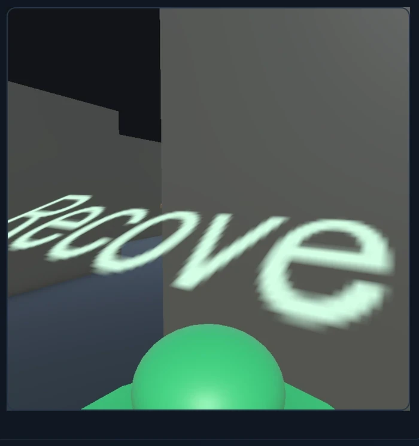
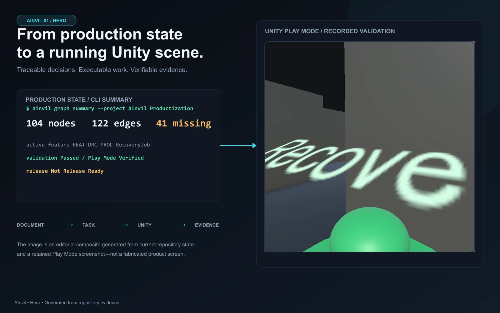
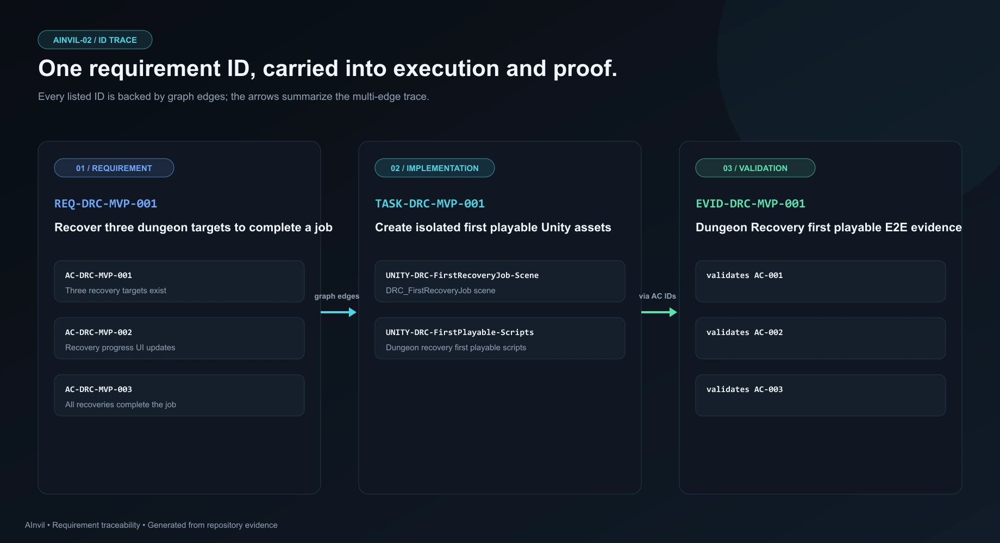
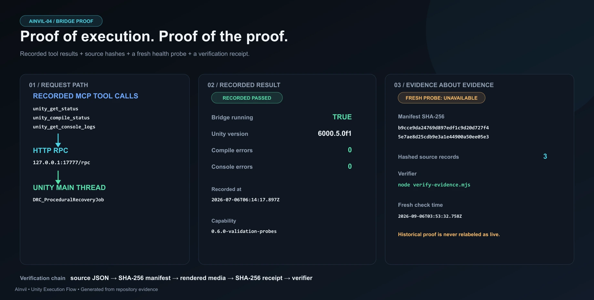
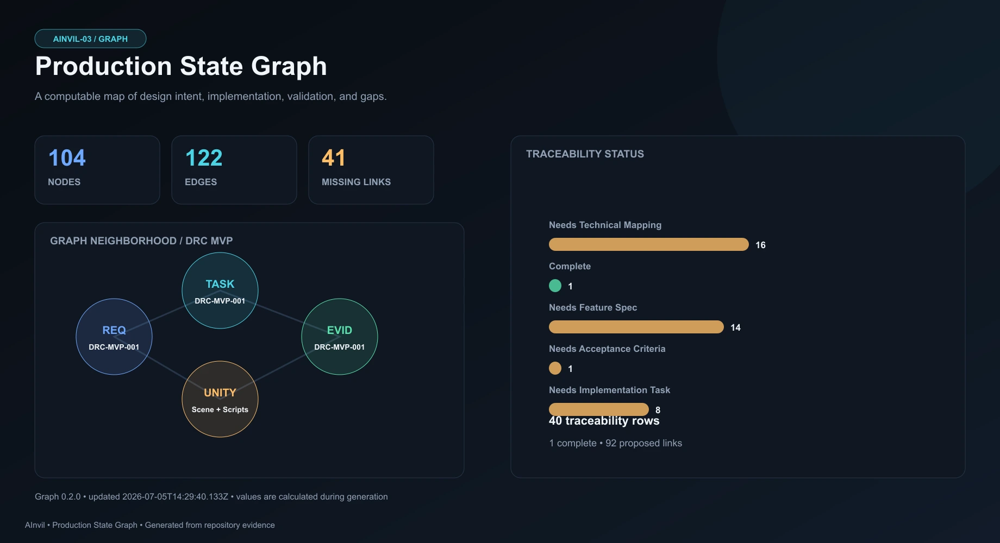
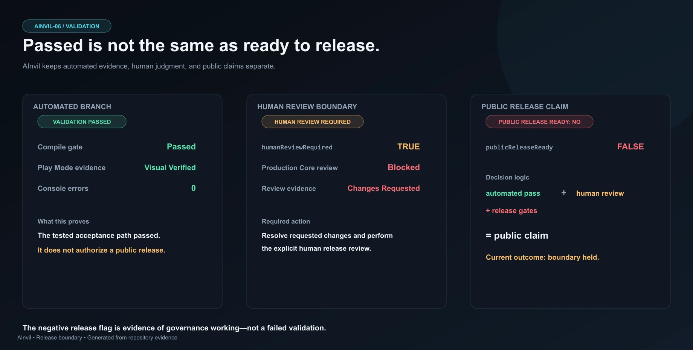
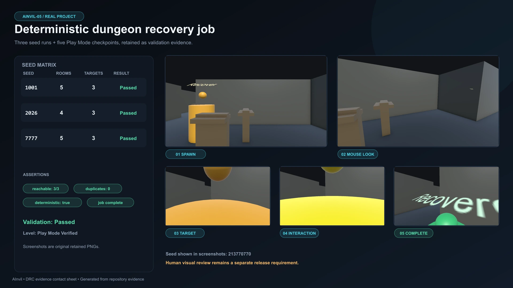

Methodology
Rule → Responsibility → Function
GDD와 규칙을 분석해 기능 책임, 클래스·메서드 이름, Unity 대상을 먼저 매핑한 뒤 Host AI의 구현 계획과 코드 생성을 구조화한다.
01 / Development Tool
게임 규칙을 분석해 구현 책임과 Unity 대상을 정리하고, 실행 결과를 검증 증거로 되돌리는 AI-assisted game development workflow.
개발자가 architecture, state model, interface, Acceptance Criteria와 최종 판단을 소유한다. Host AI는 그 결정 안에서 코드를 구현·수정하고 Unity를 실행하며, AInvil은 작업 컨텍스트와 검증 경로를 연결한다.
Intent to Evidence


02 / DEVELOPMENT METHOD
개발자는 문제 정의, 상태 모델, 아키텍처, 책임 경계와 Acceptance Criteria를 결정한다. Host AI는 그 결정 안에서 구현·리팩터링·도구 실행을 반복하고, AInvil은 컨텍스트와 추적 관계, 검증 증거를 유지한다.
03 / HOW IT WORKS
Production Flow와 Unity Execution Flow는 같은 흐름이지만 서로 다른 책임 경계를 가진다.
Production Flow
Methodology
GDD와 규칙을 분석해 기능 책임, 클래스·메서드 이름, Unity 대상을 먼저 매핑한 뒤 Host AI의 구현 계획과 코드 생성을 구조화한다.
Current Implementation
현재 저장소에서 책임·클래스·Public API는 Technical Design, Component Contract, Scene Blueprint에 기록된다. PSG에는 전용 FunctionMapping 노드가 없으며 Requirement → ImplementationTask → UnityTarget 관계로 구현 대상을 추적한다. 이 문서와 핸드오프 컨텍스트가 Host AI에 전달된다.
Unity Execution Flow
MCP handshake에서 52개 tool schema를 확인했다. Bridge는 localhost 신뢰 환경을 전제로 하며 별도 인증은 없다.


04 / PRODUCTION STATE GRAPH
사람이 읽는 규칙을 중심에 두고, ID는 문서·작업·Unity 대상·증거를 잇는 보조 식별자로 사용한다.
GAME RULE
모든 회수 목표는 도달 가능해야 한다.REQ-DRC-PROC-007IMPLEMENTATION TASK
도달 가능한 목표 배치TASK-DRC-PROC-004UNITY TARGET
Recovery Job BuilderAInvilProceduralRecoveryJobBuilderACCEPTANCE
도달 가능 목표 3개AC-DRC-PROC-004EVIDENCE
3 / 3 · PASSseed 1001 / 2026 / 7777숫자는 완성도를 과장하는 지표가 아니다. 현재 그래프가 관리하는 사실과 관계, 그리고 아직 요구·구현·검증 사이에 연결되지 않은 작업량을 함께 보여준다.

05 / VALIDATION
Validation Flow
Release Boundary
컴파일 성공이나 특정 테스트 분기의 PASS만으로 전체 수용 기준을 완료 처리하지 않는다.

06 / REAL PROJECT
Dungeon Recovery Company의 procedural recovery job에서 compile gate, Play Mode hook, 세 seed assertion을 실행 기록으로 남겼다.
Runtime Trace
Recorded Values
현재 기록은 Requirement→Runtime Evidence 구간을 증명한다. GDD, Feature Spec, 최초 implementation provenance는 완전히 연결되어 있지 않다.

07 / CURRENT LIMITS
CURRENT문서·Agent-assisted
NEXT전용 schema / graph projection
CURRENTGraph ↔ evidence drift 가능
NEXTRevision-key stale invalidation
CURRENTCompile / Runtime 중심
NEXTGame View · Audio · Profiler
08 / APPLIED PROJECTS
TOOLING + RUNTIME EVIDENCE
AInvil Unity Bridge, harness, evidence가 직접 연결된 사례. 설계부터 최초 구현까지의 전체 provenance는 아직 끊겨 있다.
TOOLING + WORKFLOW APPLICATION
Action Required는 AInvil plugin/runtime과 Unity MCP를 실제 제작 과정에 사용한 프로젝트다. 사용 범위는 확인된 제작 기록으로 설명하며 버전·호출 횟수·코드 작성 비율은 추정하지 않는다.
View Project ↗